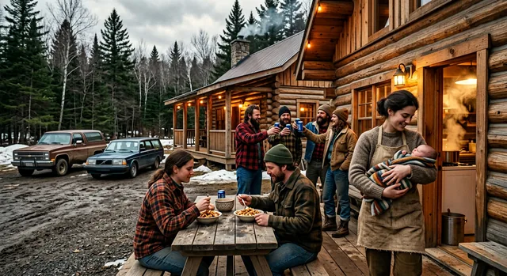
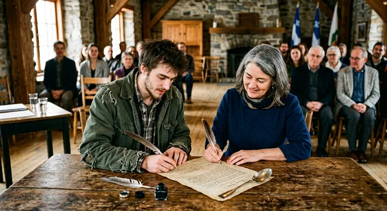
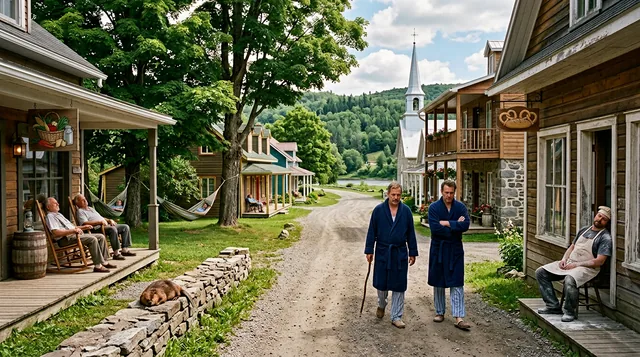
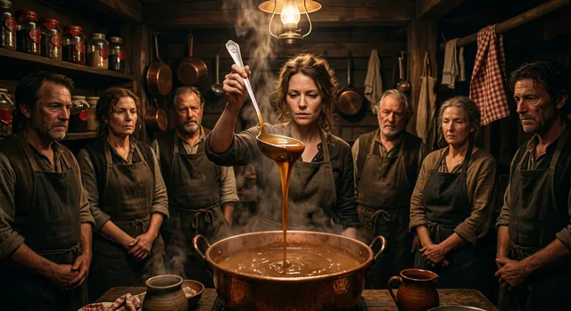
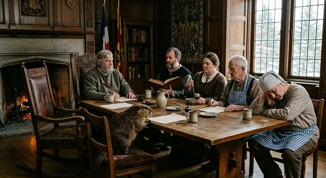
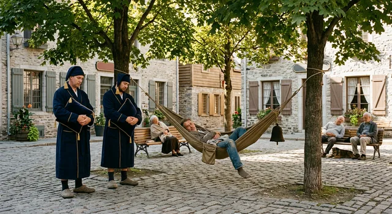

Bienvenue au Babberland
Le Royaume du Babberland est une micronation narrative francophone fondée le 12 octobre 1847 dans la forêt de Plantagenet par Babber Ier l’Ancien sur la nappe vichy de son épouse Babette, sous la bénédiction et la signature à la queue d'un castor patriote.
Ce portail réunit l'intégralité du Canon Consolidé 2026-I, les six Livres des Chroniques de l'Ancien, les registres d'Avis royaux, les données structurées, la galerie photo ultra-réaliste (83 clichés, dont les 18 figures du canon) et l'atlas géographique interactif.

Les Cinq Régions Royales (7 000 Âmes)
🏛️ Pabst City (3 500 âmes)
Capitale du Royaume, siège du Palais Royal, de la Banque Nationale, du Double Aqueduc et du comptoir historique McBabber's n° 1.
Capitale🏔️ Les Monts Froissés (1,20 m)
Alpes nationales créées le 15 juillet 1962 avec les déblais de la piscine de Babber II. Ascension officielle en quatre secondes.
Altitude : 1,20 m⚓ Port Babette (800 âmes)
Cité portuaire fondée par Babette-Marine, réputée pour ses quais en bois d'épinette, son phare blanc couronné et sa pêche contemplative.
Maritime🌿 Grass City (1 200 âmes)
Station balnéaire et capitale du chanvre légal. Fournit les fibres douces et indéchirables pour les billets de la Série B. Devise : « Pousse ».
Devise : « Pousse »🌲 Forêt de Plantagenet (1 500 âmes)
Sanctuaire de la Fondation : cabane de 1847, Chêne du Hamac royal, nappe vichy et signature à la queue du castor patriote. Population proposée, en attente de l'Avis n° 7.
Proposés, non décrétés📸 Galerie Photo Ultra-Réaliste du Babberland
Quatre-vingt-trois photographies haute définition : les 18 figures du canon, les cinq régions, le bestiaire royal, les transports, les offices d'État, les chroniques et la table du Royaume. Campagnes 2026-II à 2026-VII.
Encyclopédie Consolidée 2026-I
L'édition 2026-I est la référence canonique autonome qui fait foi. Elle réunit en sept livres l'histoire, la numismatique, la généalogie illustrée et le colophon.
Les Chroniques de l'Ancien (Livres I à VI)
Livre I — Les Fondations (1798–1889)
L'enfance de l'Ancien, la course maudite de 1816, le pacte castoral et la nappe du 12 octobre 1847.
7 TranchesLivre II — Les Bâtisseurs (1889–1914)
La régence de Babette Ire, François-Babber l'Aqueducien, les 42 bancs et le Jour de l'Eau de 1904.
7 TranchesLivre III — L'Âge Horizontal (1914–1959)
Le long règne de Babber le Dormeur, 45 ans passés à un mètre du sol, l'Article 1 et la sieste constitutionnelle.
7 Tranches
Livre IV — L'Ère Balnéaire (1959–1998)
Babber II, la création des Monts Froissés en 1962, McBabber's (1986) et le procès du Babbersgate.
7 TranchesLivre V — L'Union des Règnes (1998–2010)
Les jumeaux Honoré-Pabst et Henri-Grain, le Pabstgate de 2004 et la Guerre des Cornichons arbitrée par le Déchiré.
7 Tranches
Livre VI — Le Siècle qui Louche (2010–2026)
Babber Ier le Louche, le vrai fromage de 2018, la Série B en chanvre, Ti-Babber et la Nuit des Sept Mille.
7 TranchesLes Corps d'État & Institutions (Livre VIII)
🧀 L'Ordre des Gardiens du Kouik-Kouik
Auscultation acoustique matinale du fromage en grain à ≥ 72 dB. Tout grain muet est déchu pour « gratins civils ».

🛌 La Garde Dormante (Police de la Sieste)
Patrouilles en pantoufles insonorisées de 13 h à 15 h à vitesse bridée à 0,72 m/s. Condamnation au hamac forcé.
🍺 L'Office de la Fraîcheur (Police du Frigo)
Garantit la température légale (+2,0 °C à +3,8 °C). Cloche de la honte en cas de bière tiède (> 4,0 °C).

🥄 La Confrérie du Secret Brun
Présidée par Linéa et Ginette : garde de la recette secrète à la cuillère d'argent (8 s) et des 317 pots historiques.
📏 Les Géomètres Contemplatifs
Mesure trimestrielle des Monts Froissés à la règle d'érable : 1,20 m pile. Toute ascension en moins de quatre secondes est une hâte suspecte.
🏦 La Banque Nationale de Pabst City
Réserve stratégique de fromage en grain, trésor bimétallique et Thermomètre Maître en laiton de 1898.

🪵 Le Conseil des Sages
Fauteuil berçant en chêne, sénateur castor, séances de 10 h à 11 h 45. Deux citoyens tirés au sort parmi les meilleurs dormeurs.

🪢 Le Hamac Forcé
Peine de lèse-quiétude : deux heures sans parole, oreiller de parade, clochette à sourdine.
👥 Galerie & Dictionnaire Biographique des 18 Personnages
Explorez la biographie détaillée, les anecdotes, les citations et les attributs des 18 figures canoniques des sept générations du Babberland (1847–2026).
La Parité Poutine Pure (PPP)
1 Babber (1 ฿) ≡ 1 Poutine Régulière Royale (fromage 180g, frites 260g, sauce 140ml) + 1 Pabst Fraîche (355ml à 3,2 °C).
1 Babber (฿) = 24 Babetons (bt) (la Caisse entière).
🧮 Convertisseur Monétaire Royal
Atlas Temporel & Géographie du Royaume
Consultez l'évolution cartographique de 1830 à 2026 :